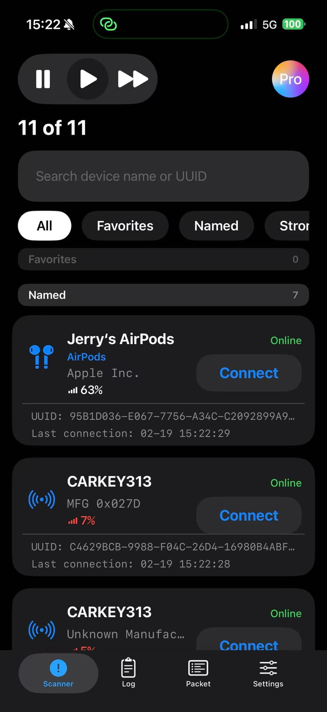
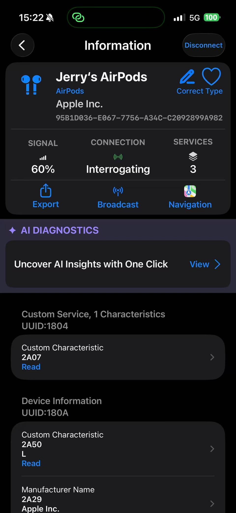
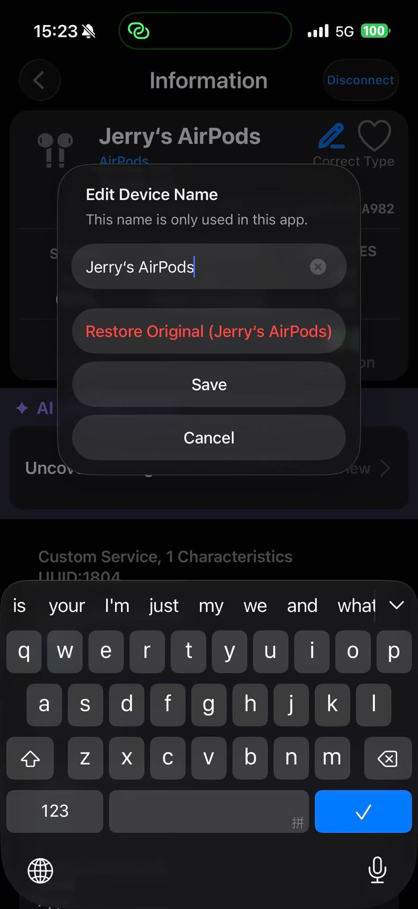
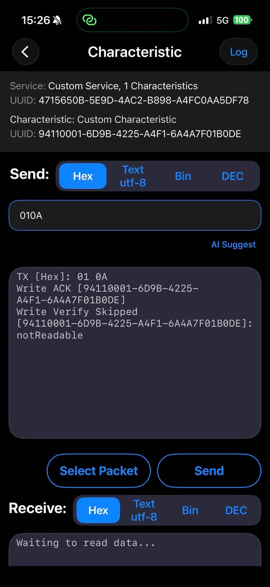
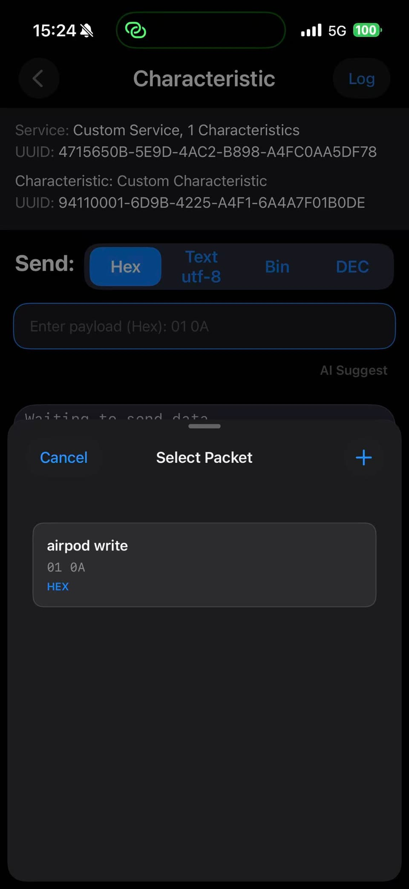
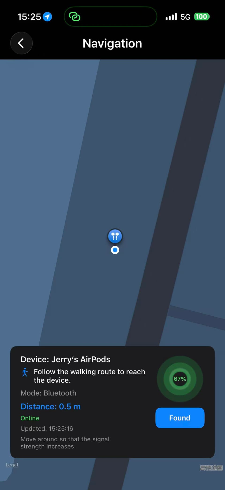
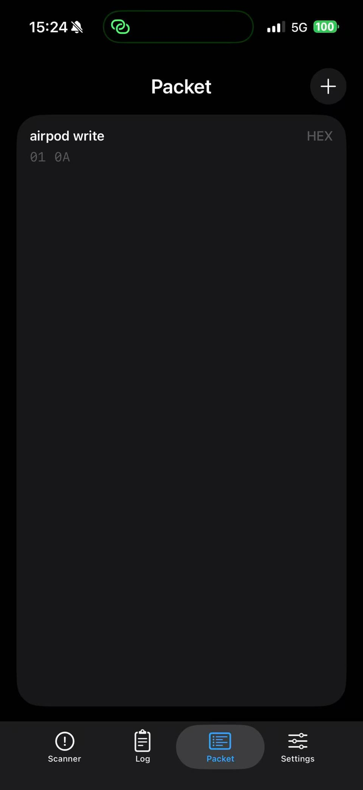
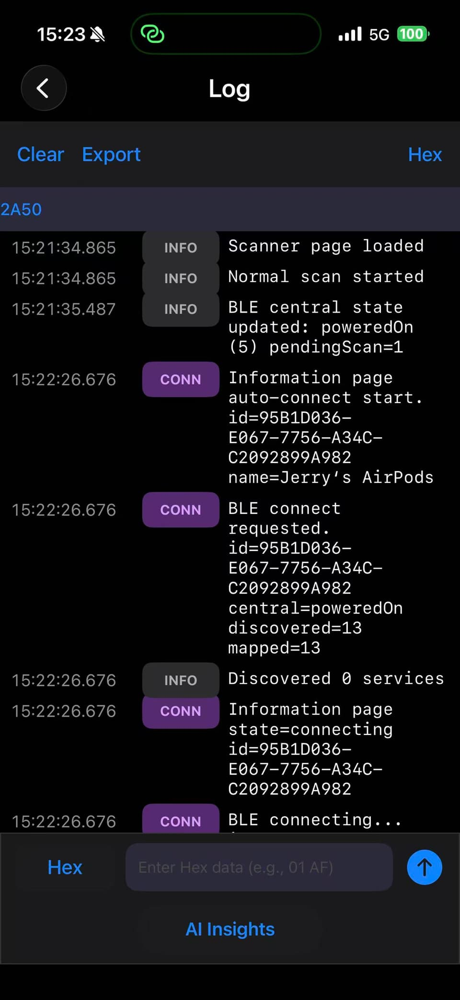
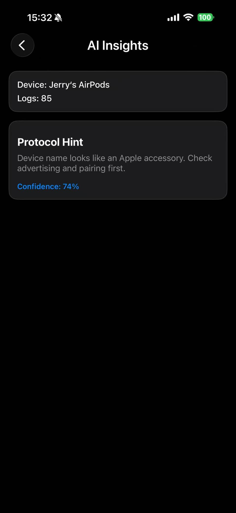

如何阅读本手册
本手册与 App 操作顺序一致。你可以一边看截图、一边按步骤执行。若要最快完成调试，建议从第 1 步连续走到第 9 步。

1
Scanner 首页：发现目标设备
从 Scanner Tab 开始，快速发现周围蓝牙设备并锁定目标。
界面功能
- 扫描控制（停止 / 普通 / 快速）、搜索框、筛选标签。
- 设备卡片展示名称、厂商、电量、在线状态。
- 每个设备卡片支持一键 Connect。
使用方案
- 先用快速扫描找设备，再切普通扫描降低噪声。
- 设备较多时用 Named/Favorites 快速收敛列表。
- 点击目标设备 Connect 进入后续信息与调试流程。

2
Information 页：状态总览与服务树
连接后进入信息页，查看连接状态、服务数量，并进入特征级调试。
界面功能
- 信号强度、连接状态、服务数等关键指标。
- Export / Broadcast / Navigation 快捷入口。
- AI Diagnostics 一键入口，快速获取诊断建议。
使用方案
- 先确认连接稳定，再进入特征读写。
- 点击服务或特征进入读写调试页面。
- 需要看广播原始字段时，从 Broadcast 入口查看。

3
设备重命名与类型纠正
为设备设置可读别名，便于团队协作和日志复盘。
界面功能
- 设备名编辑弹窗，支持恢复原名、保存、取消。
- 键盘输入可快速完成现场设备标注。
使用方案
- 建议命名：产线-机位-设备号（如 LineA-Node03）。
- 设备识别异常时可恢复原名重新校准。
- 保存后再导出日志，便于多人协作定位问题。

4
Characteristic 调试控制台
这是核心调试页面：支持多编码模式发送、接收与回写结果验证。
界面功能
- 发送模式：Hex / Text / Bin / DEC。
- 发送输入框 + 输出区域（ACK、写入校验反馈）。
- Select Packet 与 Send 快捷操作，提升调试效率。
使用方案
- 先发一条安全命令确认链路可用，再进行复杂写入。
- 按固件协议选择编码方式，避免解析错误。
- 通过输出区确认写入是否成功及设备返回内容。

5
Select Packet：复用调试命令
通过命令包复用机制，避免重复输入，提升回归测试一致性。
界面功能
- 底部弹层展示已保存命令包（名称、内容、模式）。
- 支持新增命令包，形成团队共享的调试模板。
使用方案
- 按用途维护命令包：握手、版本查询、状态查询等。
- 命名建议简短清晰，便于现场快速选择。
- 结合日志导出，形成稳定回归测试证据链。

6
Navigation：设备查找与靠近
当你需要在现实环境中定位设备时，可使用导航查找功能辅助靠近目标。
界面功能
- 地图与目标点位展示，附带实时进度环。
- 距离、在线状态、更新时间等信息面板。
使用方案
- 缓慢移动并观察信号变化趋势判断方向。
- 信号变弱时调整角度再靠近，避免金属遮挡干扰。
- 确认设备位置后点击 Found 完成本次查找。

7
Packet 页面：命令库管理
在 Packet Tab 统一维护调试命令，提高多人协同与版本迭代效率。
界面功能
- 命令包列表展示名称、内容、模式。
- 右上角 + 支持快速新增命令包。
使用方案
- 每个固件版本维护对应命令包集合。
- 协议更新后及时清理旧命令，防止误发。
- 测试团队统一命令命名规范，减少沟通成本。

8
Log 页面：全链路事件时间线
日志页按时间记录扫描、连接、收发数据等关键行为，是排障核心依据。
界面功能
- 带时间戳和级别标签的日志流（INFO/CONN 等）。
- Clear、Export、模式切换等实用操作。
- 底部 AI Insights 入口，一键生成诊断建议。
使用方案
- 问题复现后第一时间导出日志，保留上下文。
- 新测试前先 Clear，减少历史噪声干扰。
- 结合命令包名称快速定位关键事件片段。

9
AI Insights：智能诊断建议
AI 将日志与设备上下文转换为可执行建议，帮助更快定位协议和配对问题。
界面功能
- 设备信息、日志条数、协议提示卡片。
- 置信度分值，便于判断建议优先级。
使用方案
- 至少完成一次连接+读写后再看 AI 结果更准确。
- 先按 AI 建议调整，再回到调试页复测验证。
- AI 结论建议与原始日志交叉确认，形成闭环。
推荐使用方案
根据目标选择最短路径，提升调试效率。
快速联调流程
1 → 2 → 4 → 8 → 9
扫描、连接、读写验证、日志导出、AI 诊断闭环。
现场找设备流程
1 → 2 → 6
先确认目标身份，再通过导航能力完成物理定位。
回归测试流程
7 → 5 → 4 → 8
加载命令包批量测试，导出日志用于版本对比。